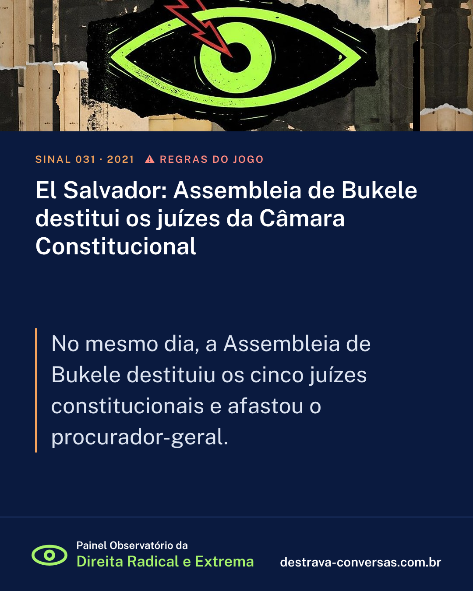

El Salvador: Assembleia de Bukele destitui os juízes da Câmara Constitucional
No mesmo dia, a Assembleia de Bukele destituiu os cinco juízes constitucionais e afastou o procurador-geral.
Assembleia governista destitui os cinco juízes da Câmara Constitucional e nomeia substitutos sem seguir o procedimento previsto na Constituição; o procurador-geral é afastado no mesmo dia.
Situação: Concretizada. Tipo: cortes e órgãos de controle.
Fontes: ConstitutionNet; Canning House; CISPES

